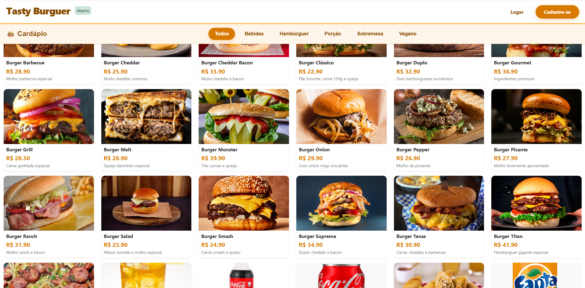
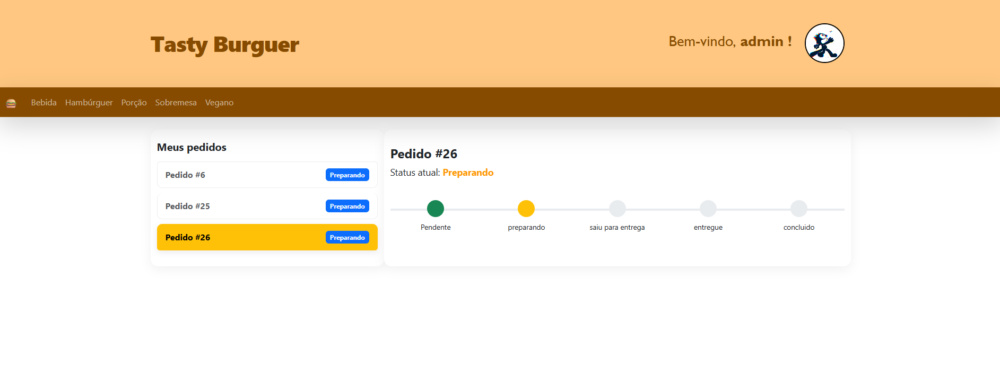
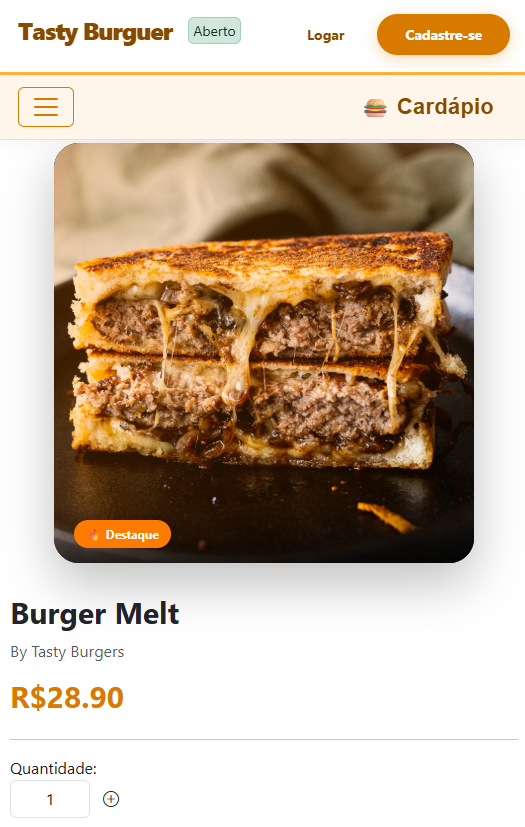

Um sistema completo de pedidos pra hamburgueria: o cliente monta o carrinho, paga, e acompanha o pedido do preparo até a entrega. Feito do zero como projeto acadêmico.
O Tasty Burger é um sistema de delivery pensado pra ser simples de usar e simples de manter — dá pra rodar numa lanchonete pequena, num carrinho de lanche ou em qualquer hamburgueria que queira vender pela internet sem depender de aplicativo de terceiro.
O cliente entra no site, escolhe os itens do cardápio, monta o carrinho e finaliza o pedido. Do outro lado, o dono recebe o pedido, atualiza o status e organiza a entrega — tudo pela mesma plataforma.

Cada pedido passa por um fluxo de status em tempo real — o mesmo que o cliente acompanha na tela "Meus pedidos" dentro do sistema.

Print real da tela "Meus pedidos" do sistema — o cliente acompanha o status de cada pedido em tempo real.O cardápio é dividido por categoria pra facilitar a escolha — do clássico X-Burger até opção vegana. Cada item tem foto, descrição e preço, e vai direto pro carrinho com um clique.

Stack usada do front ao banco de dados, sem framework pesado — só o essencial pra rodar bem.